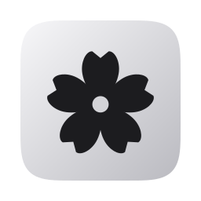
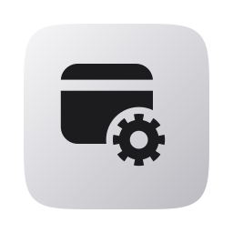
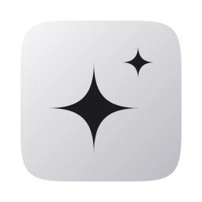
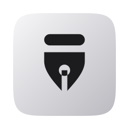
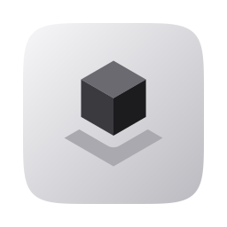

<!doctype html>
<html lang="ko">
<head>
<meta charset="utf-8">
<title>Bloom update scenes</title>
<link rel="stylesheet" href="https://cdn.jsdelivr.net/gh/wanteddev/wanted-sans@v1.0.3/packages/wanted-sans/fonts/webfonts/variable/split/WantedSansVariable.min.css">
<style>
/* Moving pictures for the update log (바뀐 점 and the GitHub release), drawn in the landing page's island style.
   One scene per page: scenes.html?scene=<name>; capture.mjs calls seek(t) for every frame and takes #screen.
   Each scene sets its own size and --u (pixels per unit); positions are in units. The pictures are shown about 490
   wide in the app, so a unit is big: text stays readable there. */
* { box-sizing: border-box; }
html, body { margin: 0; background: #0b0b0d; }
body { font-family: "Wanted Sans Variable", "Wanted Sans", "Pretendard", "Malgun Gothic", system-ui, sans-serif; -webkit-font-smoothing: antialiased; }
.screen {
  --u: 1.5px;
  position: relative; width: 960px; height: 400px; overflow: hidden;
  background:
    radial-gradient(60% 90% at 22% 110%, rgba(255, 255, 255, 0.10), transparent 70%),
    radial-gradient(50% 80% at 85% 0%, rgba(255, 255, 255, 0.07), transparent 70%),
    linear-gradient(160deg, #1c1c1f, #0b0b0d);
  color: #fff; font-variant-numeric: tabular-nums;
}
.screen, .screen * { corner-shape: squircle; }
.u { position: absolute; left: calc(var(--x) * var(--u)); top: calc(var(--y) * var(--u)); width: calc(var(--w) * var(--u)); height: calc(var(--h) * var(--u)); }
.win { border: 1px solid rgba(255, 255, 255, 0.08); border-radius: calc(10 * var(--u)); background: rgba(255, 255, 255, 0.03); }
.win::before { content: ""; position: absolute; left: calc(12 * var(--u)); top: calc(12 * var(--u)); width: 38%; height: calc(6 * var(--u)); border-radius: calc(3 * var(--u)); background: rgba(255, 255, 255, 0.06); }
.cursor {
  position: absolute; z-index: 99; width: calc(18 * var(--u)); height: calc(18 * var(--u));
  translate: -18% -10%; fill: #fafafa; stroke: #111; stroke-width: 1.4; stroke-linejoin: round;
  filter: drop-shadow(0 2px 3px rgba(0, 0, 0, 0.5));
}
.glass {
  border: 1px solid rgba(255, 255, 255, 0.12);
  background: linear-gradient(rgba(44, 42, 52, 0.9), rgba(26, 25, 32, 0.94));
  box-shadow: 0 calc(10 * var(--u)) calc(30 * var(--u)) rgba(0, 0, 0, 0.5);
}
.tile { position: relative; flex: none; display: flex; align-items: center; justify-content: center; width: calc(30 * var(--u)); height: calc(30 * var(--u)); border-radius: calc(8 * var(--u)); }
.tile img { flex: none; width: calc(35 * var(--u)); height: calc(35 * var(--u)); }
.tile svg { flex: none; width: calc(19 * var(--u)); height: calc(19 * var(--u)); fill: none; stroke: currentColor; stroke-width: 1.8; stroke-linecap: round; stroke-linejoin: round; }
.tile--auto { background: rgba(255, 255, 255, 0.08); color: #a1a1aa; }
.tile--app { background: linear-gradient(135deg, #f7f7f9, #babac0); color: #18181b; }
.tile.is-run::after { content: ""; position: absolute; left: 50%; bottom: calc(-7 * var(--u)); translate: -50% 0; width: calc(6 * var(--u)); height: calc(3 * var(--u)); border-radius: calc(2 * var(--u)); background: rgba(255, 255, 255, 0.35); }
.tile.is-front::after { width: calc(18 * var(--u)); height: calc(2.5 * var(--u)); background: #fff; }
.logo { flex: none; width: calc(11 * var(--u)); height: calc(11 * var(--u)); fill: currentColor; }

/* ---------- taskbar: the island opens into the pill, a folder opens, an app in it opens its window ---------- */
/* --open 0–1 grows the island (--iw wide, 30 high, flat top) into the pill (--pw wide, 46 high, round) about --mid */
.isle-shape {
  position: absolute; z-index: 2;
  left: calc(var(--mid) * var(--u)); top: calc(8 * var(--open) * var(--u));
  width: calc((var(--iw) + (var(--pw) - var(--iw)) * var(--open)) * var(--u));
  height: calc((30 + 16 * var(--open)) * var(--u));
  transform: translateX(-50%);
  border-radius: calc(23 * var(--open) * var(--u)) calc(23 * var(--open) * var(--u)) calc((15 + 8 * var(--open)) * var(--u)) calc((15 + 8 * var(--open)) * var(--u));
}
.isle-shape, .isle-black, .isle-glass, .isle-fil { corner-shape: round; }
.isle-black, .isle-glass { position: absolute; inset: 0; border-radius: inherit; }
.isle-black { background: #000; opacity: calc(1 - var(--open)); }
.isle-glass {
  opacity: var(--open); background: linear-gradient(rgba(44, 42, 52, 0.82), rgba(26, 25, 32, 0.86));
  border: 1px solid rgba(255, 255, 255, 0.12); box-shadow: 0 calc(10 * var(--u)) calc(30 * var(--u)) rgba(0, 0, 0, 0.45);
}
.isle-fil { position: absolute; top: 0; width: calc(8 * var(--u)); height: calc(8 * var(--u)); opacity: clamp(0, calc(1 - var(--open) * 5), 1); }
.isle-fil--l { right: 100%; background: radial-gradient(circle at 0 100%, transparent calc(8 * var(--u)), #000 calc(8 * var(--u) + 0.5px)); }
.isle-fil--r { left: 100%; background: radial-gradient(circle at 100% 100%, transparent calc(8 * var(--u)), #000 calc(8 * var(--u) + 0.5px)); }
.isle-island, .isle-pill { position: absolute; inset: 0; display: flex; align-items: center; white-space: nowrap; }
.isle-island { justify-content: center; gap: calc(14 * var(--u)); font-size: calc(12 * var(--u)); font-weight: 500; opacity: clamp(0, calc(1 - var(--open) * 3), 1); }
.use { display: inline-flex; align-items: center; gap: calc(5 * var(--u)); }
.use .logo { width: calc(12 * var(--u)); height: calc(12 * var(--u)); }
.isle-pill { gap: calc(14 * var(--u)); padding-inline: calc(8 * var(--u)) calc(18 * var(--u)); opacity: clamp(0, calc((var(--open) - 0.3) * 2.2), 1); }
.isle-time { font-size: calc(13 * var(--u)); color: #e4e4e7; }
.isle-tray { margin-left: auto; display: flex; gap: calc(14 * var(--u)); color: #e4e4e7; }
.isle-tray svg { width: calc(16 * var(--u)); height: calc(16 * var(--u)); fill: none; stroke: currentColor; stroke-width: 1.8; stroke-linecap: round; stroke-linejoin: round; }
.tile--folder::before { content: ""; position: absolute; inset: calc(-4 * var(--u)); border-radius: calc(11 * var(--u)); background: rgba(255, 255, 255, 0.16); opacity: var(--pop); }
.accts { display: flex; align-items: center; gap: calc(14 * var(--u)); padding-left: calc(4 * var(--u)); translate: 0 calc(-2 * var(--u)); line-height: 1.15; }
.pa { display: flex; flex-direction: column; gap: calc(5 * var(--u)); min-width: calc(78 * var(--u)); font-size: calc(11 * var(--u)); color: #e4e4e7; }
.pa__row { display: flex; align-items: center; gap: calc(4 * var(--u)); }
.pa__row b { font-weight: 500; }
.pa__row span { margin-left: auto; padding-left: calc(8 * var(--u)); }
.pa i { display: block; height: calc(3 * var(--u)); border-radius: calc(2 * var(--u)); background: linear-gradient(90deg, #f4f4f5 calc(var(--v) * 100%), rgba(255, 255, 255, 0.16) 0); }
.pop {
  z-index: 3; display: flex; gap: calc(12 * var(--u)); padding: calc(14 * var(--u)); border-radius: calc(18 * var(--u));
  opacity: var(--pop); transform-origin: 50% 0;
  transform: translateY(calc((1 - var(--pop)) * -10 * var(--u))) scale(calc(0.9 + 0.1 * var(--pop)));
}
.pop .tile { width: calc(42 * var(--u)); height: calc(42 * var(--u)); border-radius: calc(11 * var(--u)); }
.pop .tile svg { width: calc(24 * var(--u)); height: calc(24 * var(--u)); }
.pop .tile::before { content: ""; position: absolute; inset: calc(-4 * var(--u)); border-radius: calc(14 * var(--u)); background: rgba(255, 255, 255, 0.16); opacity: var(--hot, 0); }
/* the calculator the folder opens */
.calc {
  z-index: 1; border-radius: calc(14 * var(--u)); padding: calc(12 * var(--u)); display: flex; flex-direction: column; gap: calc(8 * var(--u));
  opacity: var(--app); transform-origin: var(--ox) var(--oy); transform: scale(calc(0.6 + 0.4 * var(--app)));
}
.calc__bar { display: flex; gap: calc(5 * var(--u)); }
.calc__bar i { width: calc(7 * var(--u)); height: calc(7 * var(--u)); border-radius: 50%; background: rgba(255, 255, 255, 0.16); corner-shape: round; }
.calc__out { text-align: right; font-size: calc(24 * var(--u)); font-weight: 500; color: #f4f4f5; padding-right: calc(4 * var(--u)); }
.calc__keys { flex: 1; display: grid; grid-template-columns: repeat(4, 1fr); gap: calc(5 * var(--u)); }
.calc__keys i { border-radius: calc(6 * var(--u)); background: rgba(255, 255, 255, 0.07); }
.calc__keys i:nth-child(4n) { background: rgba(255, 255, 255, 0.14); }
/* ---------- the pill at rest, for the widget scenes ---------- */
.desk { position: absolute; inset: 0; filter: brightness(var(--lum, 1)); background: inherit; }
.pill {
  position: absolute; z-index: 2; left: calc(var(--x) * var(--u)); top: calc(8 * var(--u)); width: calc(var(--w) * var(--u)); height: calc(46 * var(--u));
  display: flex; align-items: center; gap: calc(14 * var(--u)); padding-inline: calc(8 * var(--u)) calc(18 * var(--u)); white-space: nowrap;
  border-radius: calc(23 * var(--u)); corner-shape: round;
  background: linear-gradient(rgba(44, 42, 52, 0.82), rgba(26, 25, 32, 0.86)); border: 1px solid rgba(255, 255, 255, 0.12);
  box-shadow: 0 calc(10 * var(--u)) calc(30 * var(--u)) rgba(0, 0, 0, 0.45);
}
.pill .isle-tray { gap: calc(12 * var(--u)); align-items: center; }
/* the two widgets: a monitor with the brightness, a RAM module with the use */
.wid { position: relative; flex: none; display: grid; place-items: center; color: #e4e4e7; font-size: calc(9 * var(--u)); font-weight: 700; letter-spacing: -0.02em; }
.wid::before { content: ""; position: absolute; inset: calc(-6 * var(--u)) calc(-6 * var(--u)); border-radius: calc(8 * var(--u)); background: rgba(255, 255, 255, 0.16); opacity: var(--on, 0); }
.wid b { position: relative; font-weight: inherit; }
.wid--bri { width: calc(25 * var(--u)); height: calc(17 * var(--u)); border: calc(1.6 * var(--u)) solid currentColor; border-radius: calc(3.5 * var(--u)); margin-bottom: calc(3 * var(--u)); }
.wid--bri::after { content: ""; position: absolute; left: 50%; bottom: calc(-5 * var(--u)); translate: -50% 0; width: calc(9 * var(--u)); height: calc(2 * var(--u)); border-radius: calc(1 * var(--u)); background: currentColor; }
.wid--ram { width: calc(27 * var(--u)); height: calc(15 * var(--u)); border: calc(1.6 * var(--u)) solid currentColor; border-radius: calc(2.5 * var(--u)); margin-bottom: calc(3 * var(--u)); }
.wid--ram::after { content: ""; position: absolute; left: calc(3 * var(--u)); right: calc(3 * var(--u)); bottom: calc(-5 * var(--u)); height: calc(3 * var(--u)); background: repeating-linear-gradient(90deg, currentColor 0 calc(1.6 * var(--u)), transparent 0 calc(3.6 * var(--u))); }

/* a flyout under the pill's right end */
.fly {
  position: absolute; z-index: 3; top: calc(62 * var(--u)); right: calc(var(--r) * var(--u)); width: calc(var(--w) * var(--u));
  border-radius: calc(16 * var(--u)); padding: calc(12 * var(--u)); display: flex; flex-direction: column; gap: calc(8 * var(--u));
  opacity: var(--fly); transform-origin: 85% 0; transform: translateY(calc((1 - var(--fly)) * -8 * var(--u))) scale(calc(0.94 + 0.06 * var(--fly)));
  font-size: calc(10 * var(--u)); color: #e4e4e7;
}
.row { display: flex; align-items: center; gap: calc(6 * var(--u)); }
.row > .end { margin-left: auto; }
.faint { color: #a1a1aa; }
.ico { flex: none; width: calc(12 * var(--u)); height: calc(12 * var(--u)); fill: none; stroke: currentColor; stroke-width: 1.8; stroke-linecap: round; stroke-linejoin: round; }
.seg { display: flex; flex: 1; padding: calc(2 * var(--u)); border-radius: calc(7 * var(--u)); background: rgba(255, 255, 255, 0.06); }
.seg span { flex: 1; text-align: center; padding: calc(3 * var(--u)) 0; border-radius: calc(5 * var(--u)); color: #a1a1aa; }
.seg span.on { background: rgba(255, 255, 255, 0.12); color: #f4f4f5; }
.big { font-size: calc(24 * var(--u)); font-weight: 700; color: #f4f4f5; letter-spacing: -0.02em; line-height: 1; }
.big small { font-size: calc(12 * var(--u)); font-weight: 600; margin-left: calc(1 * var(--u)); }
.bar { height: calc(var(--bh, 4) * var(--u)); border-radius: calc(2 * var(--u)); background: linear-gradient(90deg, var(--pink) calc(var(--v) * 100%), rgba(255, 255, 255, 0.12) 0); }
.box { border-radius: calc(9 * var(--u)); background: rgba(255, 255, 255, 0.05); padding: calc(8 * var(--u)); display: flex; flex-direction: column; gap: calc(5 * var(--u)); }
.box .row { white-space: nowrap; font-size: calc(9.5 * var(--u)); }
.btn { position: relative; height: calc(24 * var(--u)); border-radius: calc(8 * var(--u)); display: flex; align-items: center; justify-content: center; gap: calc(5 * var(--u)); font-weight: 600; color: #f4f4f5; background: rgba(255, 255, 255, calc(0.1 + 0.08 * var(--hot, 0))); }
.status { text-align: center; font-size: calc(9.5 * var(--u)); }
.status span { position: absolute; left: 0; right: 0; transition: none; }
/* brightness rows: a slider with its knob */
.slider { position: relative; height: calc(14 * var(--u)); }
.slider .bar { position: absolute; left: 0; right: 0; top: 50%; translate: 0 -50%; }
.slider i { position: absolute; top: 50%; left: calc(var(--v) * 100%); width: calc(12 * var(--u)); height: calc(12 * var(--u)); translate: -50% -50%; border-radius: 50%; corner-shape: round; background: #fafafa; box-shadow: 0 1px 3px rgba(0, 0, 0, 0.5); scale: calc(1 + 0.15 * var(--grab, 0)); }
.key { display: inline-grid; place-items: center; min-width: calc(15 * var(--u)); height: calc(14 * var(--u)); padding: 0 calc(4 * var(--u)); border-radius: calc(4 * var(--u)); background: rgba(255, 255, 255, 0.08); font-size: calc(8.5 * var(--u)); color: #d4d4d8; }
.link { color: var(--pink); }
.wheel { position: absolute; z-index: 9; width: calc(16 * var(--u)); height: calc(16 * var(--u)); border-radius: 50%; corner-shape: round; display: grid; place-items: center; background: rgba(250, 250, 250, 0.92); color: #18181b; opacity: var(--wheel, 0); }
.wheel svg { width: calc(11 * var(--u)); height: calc(11 * var(--u)); fill: none; stroke: currentColor; stroke-width: 2.4; stroke-linecap: round; stroke-linejoin: round; }

/* ---------- two monitors, Alt+Tab on the one with the cursor ---------- */
.mon { isolation: isolate; position: absolute; top: calc(18 * var(--u)); width: calc(292 * var(--u)); height: calc(174 * var(--u)); border: calc(4 * var(--u)) solid #2b2b30; border-radius: calc(9 * var(--u)); overflow: hidden;
  background: radial-gradient(70% 90% at 30% 110%, rgba(255, 255, 255, 0.08), transparent 70%), linear-gradient(160deg, #202024, #111114); }
.stand { position: absolute; top: calc(192 * var(--u)); width: calc(26 * var(--u)); height: calc(26 * var(--u)); background: linear-gradient(#2b2b30, #1d1d21); }
.foot { position: absolute; top: calc(218 * var(--u)); width: calc(92 * var(--u)); height: calc(6 * var(--u)); border-radius: calc(3 * var(--u)); background: #2b2b30; }
.w { position: absolute; border-radius: calc(7 * var(--u)); background: #232327; border: 1px solid rgba(255, 255, 255, 0.09); box-shadow: 0 calc(6 * var(--u)) calc(16 * var(--u)) rgba(0, 0, 0, 0.45); overflow: hidden; }
.w__bar { height: calc(18 * var(--u)); display: flex; align-items: center; gap: calc(5 * var(--u)); padding: 0 calc(6 * var(--u)); background: rgba(255, 255, 255, calc(0.03 + 0.05 * var(--act, 0))); }
.w__bar img { width: calc(13 * var(--u)); height: calc(13 * var(--u)); }
.w__bar i { width: 35%; height: calc(4 * var(--u)); border-radius: calc(2 * var(--u)); background: rgba(255, 255, 255, calc(0.1 + 0.15 * var(--act, 0))); }
.w__body { padding: calc(8 * var(--u)); display: flex; flex-direction: column; gap: calc(5 * var(--u)); }
.w__body i { height: calc(4 * var(--u)); border-radius: calc(2 * var(--u)); background: rgba(255, 255, 255, 0.06); }
.sw {
  position: absolute; z-index: 50; left: 50%; top: 50%; display: flex; gap: calc(8 * var(--u)); padding: calc(10 * var(--u)); border-radius: calc(12 * var(--u));
  background: rgba(36, 36, 40, 0.94); border: 1px solid rgba(255, 255, 255, 0.12); box-shadow: 0 calc(10 * var(--u)) calc(30 * var(--u)) rgba(0, 0, 0, 0.6);
  opacity: var(--sw, 0); transform: translate(-50%, -50%) scale(calc(0.94 + 0.06 * var(--sw, 0)));
}
.th { position: relative; display: flex; flex-direction: column; gap: calc(4 * var(--u)); align-items: center; }
.th img { width: calc(24 * var(--u)); height: calc(24 * var(--u)); }
.th { width: calc(64 * var(--u)); height: calc(46 * var(--u)); justify-content: center; border-radius: calc(5 * var(--u)); background: #2e2e33; border: 1px solid rgba(255, 255, 255, 0.08); }
.th::after { content: ""; position: absolute; inset: calc(-5 * var(--u)); border-radius: calc(8 * var(--u)); border: calc(2 * var(--u)) solid #fafafa; opacity: var(--sel, 0); }
.keys { position: absolute; z-index: 8; top: calc(234 * var(--u)); left: 50%; translate: -50% 0; display: flex; gap: calc(6 * var(--u)); }
.cap {
  min-width: calc(40 * var(--u)); height: calc(24 * var(--u)); padding: 0 calc(9 * var(--u)); display: grid; place-items: center; border-radius: calc(6 * var(--u));
  font-size: calc(11 * var(--u)); font-weight: 600; color: #f4f4f5;
  background: linear-gradient(#3a3a3f, #2a2a2e); border: 1px solid rgba(255, 255, 255, 0.14);
  box-shadow: 0 calc((3 - 2.5 * var(--down, 0)) * var(--u)) 0 #141416; translate: 0 calc(2.5 * var(--down, 0) * var(--u));
}
.cap.is-down { background: linear-gradient(#f4f4f5, #d4d4d8); color: #18181b; }
/* ---------- coffee: the cup by the clock keeps the computer awake ---------- */
.wid--cup { width: calc(22 * var(--u)); height: calc(20 * var(--u)); }
.wid--cup svg { position: relative; width: 100%; height: 100%; overflow: visible; fill: none; stroke: currentColor; stroke-width: 1.8; stroke-linecap: round; stroke-linejoin: round; }
.wid--cup .fill { fill: var(--pink); stroke: var(--pink); opacity: var(--cup, 0); }
.tog { position: relative; flex: none; width: calc(30 * var(--u)); height: calc(16 * var(--u)); border-radius: calc(8 * var(--u)); corner-shape: round; background: color-mix(in srgb, var(--pink) calc(var(--on, 0) * 100%), rgba(255, 255, 255, 0.16)); }
.tog i { position: absolute; top: calc(2 * var(--u)); left: calc((2 + 14 * var(--on, 0)) * var(--u)); width: calc(12 * var(--u)); height: calc(12 * var(--u)); border-radius: 50%; corner-shape: round; background: #fafafa; }
.state { position: relative; height: calc(34 * var(--u)); border-radius: calc(9 * var(--u)); background: rgba(255, 255, 255, 0.06); }
.state span { position: absolute; left: calc(10 * var(--u)); top: 50%; translate: 0 -50%; font-size: calc(14 * var(--u)); font-weight: 600; color: #f4f4f5; white-space: nowrap; }
.label { font-size: calc(9 * var(--u)); color: #a1a1aa; margin-bottom: calc(-4 * var(--u)); }
.seg span { position: relative; white-space: nowrap; font-size: calc(9 * var(--u)); }
.seg span.pick { background: rgba(255, 255, 255, 0.12); color: #f4f4f5; }
/* the screen asleep, the idle time running fast, the cup holding the screen on */
.sleep { position: absolute; inset: 0; z-index: 50; background: #000; opacity: var(--sleep, 0); display: grid; place-items: center; }
.sleep svg { width: calc(28 * var(--u)); height: calc(28 * var(--u)); fill: none; stroke: #52525b; stroke-width: 1.6; stroke-linecap: round; stroke-linejoin: round; }
.idle {
  position: absolute; z-index: 60; left: 50%; top: calc(222 * var(--u)); translate: -50% 0; display: flex; align-items: center; gap: calc(6 * var(--u));
  padding: calc(6 * var(--u)) calc(12 * var(--u)); border-radius: calc(14 * var(--u)); corner-shape: round; white-space: nowrap;
  font-size: calc(11 * var(--u)); font-weight: 500; color: #f4f4f5; background: rgba(36, 36, 40, 0.94); border: 1px solid rgba(255, 255, 255, 0.12);
  opacity: var(--idle, 0); transform: translateY(calc((1 - var(--idle, 0)) * 6 * var(--u)));
}
.idle svg { width: calc(13 * var(--u)); height: calc(13 * var(--u)); fill: none; stroke: currentColor; stroke-width: 1.8; stroke-linecap: round; stroke-linejoin: round; }
.idle .ff { color: #a1a1aa; letter-spacing: -0.1em; }
.idle .ok { color: var(--pink); font-weight: 600; }
.wid--cup::after { content: ""; position: absolute; inset: calc(-5 * var(--u)); border-radius: 50%; corner-shape: round; border: calc(2 * var(--u)) solid var(--pink); opacity: calc((1 - var(--pulse, 0)) * var(--ring, 0)); transform: scale(calc(0.7 + 0.8 * var(--pulse, 0))); }
/* ---------- snippets: the clipboard view's 상용구 tab pastes into the window in front ---------- */
.doc { position: absolute; border-radius: calc(10 * var(--u)); background: #232327; border: 1px solid rgba(255, 255, 255, 0.09); box-shadow: 0 calc(8 * var(--u)) calc(20 * var(--u)) rgba(0, 0, 0, 0.45); overflow: hidden; }
.doc .w__bar { height: calc(22 * var(--u)); padding: 0 calc(9 * var(--u)); background: rgba(255, 255, 255, 0.06); }
.doc .w__bar i { width: 30%; }
.doc__body { padding: calc(12 * var(--u)) calc(14 * var(--u)); display: flex; flex-direction: column; gap: calc(7 * var(--u)); }
.doc__body > i { height: calc(5 * var(--u)); border-radius: calc(3 * var(--u)); background: rgba(255, 255, 255, 0.08); }
.paste { position: relative; font-size: calc(11 * var(--u)); line-height: 1.55; color: #f4f4f5; white-space: pre-line; margin-top: calc(4 * var(--u)); }
.paste span { border-radius: calc(3 * var(--u)); background: rgba(255, 122, 158, calc(0.32 * var(--flash, 0))); opacity: var(--pasted, 0); }
.caret { display: inline-block; width: calc(1.5 * var(--u)); height: calc(13 * var(--u)); margin-left: calc(1 * var(--u)); vertical-align: calc(-2.5 * var(--u)); background: #f4f4f5; opacity: var(--blink, 1); }
.lch {
  position: absolute; z-index: 5; border-radius: calc(16 * var(--u)); padding: calc(10 * var(--u)); display: flex; flex-direction: column; gap: calc(6 * var(--u));
  opacity: var(--card, 0); transform-origin: 50% 30%; transform: scale(calc(0.96 + 0.04 * var(--card, 0)));
  font-size: calc(10.5 * var(--u)); color: #e4e4e7;
}
.lch__search { display: flex; align-items: center; gap: calc(7 * var(--u)); height: calc(30 * var(--u)); padding: 0 calc(4 * var(--u)) 0 calc(8 * var(--u)); border-radius: calc(10 * var(--u)); background: rgba(255, 255, 255, 0.06); }
.lch__search .ico { width: calc(13 * var(--u)); height: calc(13 * var(--u)); color: #a1a1aa; }
.lch__search .seg { flex: none; margin-left: auto; }
.lch__search .seg span { padding: calc(3 * var(--u)) calc(9 * var(--u)); font-size: calc(9.5 * var(--u)); }
.lch__lists { position: relative; flex: 1; }
.lch__list { position: absolute; inset: 0; display: flex; flex-direction: column; gap: calc(2 * var(--u)); }
.lch__head { display: flex; padding: calc(4 * var(--u)) calc(8 * var(--u)) calc(2 * var(--u)); font-size: calc(9 * var(--u)); color: #a1a1aa; }
.lch__head span { margin-left: auto; }
.lrow { position: relative; display: flex; align-items: center; gap: calc(8 * var(--u)); height: calc(27 * var(--u)); padding: 0 calc(8 * var(--u)); border-radius: calc(8 * var(--u)); white-space: nowrap; }
.lrow::before { content: ""; position: absolute; inset: 0; border-radius: inherit; background: rgba(255, 255, 255, 0.08); opacity: var(--sel, 0); }
.lrow::after { content: ""; position: absolute; left: 0; top: 50%; translate: 0 -50%; width: calc(3 * var(--u)); height: calc(15 * var(--u)); border-radius: calc(2 * var(--u)); background: #f4f4f5; opacity: var(--sel, 0); }
.lrow > * { position: relative; }
.lrow .ico { width: calc(13 * var(--u)); height: calc(13 * var(--u)); color: #a1a1aa; }
.lrow b { font-weight: 500; color: #f4f4f5; }
.lrow .faint { overflow: hidden; text-overflow: ellipsis; min-width: 0; }
.lrow .end { margin-left: auto; flex: none; }
</style>
</head>
<body>
<div class="screen" id="screen"></div>
<script>
// ---- time: piecewise tweens. A track is [[time, value, ease]...]; the ease shapes the run into that key.
const E = {
  none: t => t,
  io2: t => t < .5 ? 2 * t * t : 1 - (-2 * t + 2) ** 2 / 2,
  io3: t => t < .5 ? 4 * t ** 3 : 1 - (-2 * t + 2) ** 3 / 2,
  out2: t => 1 - (1 - t) ** 2,
  out3: t => 1 - (1 - t) ** 3,
  in2: t => t * t,
  outExpo: t => t >= 1 ? 1 : 1 - 2 ** (-10 * t),
};
function at(track, t) {
  if (t <= track[0][0]) return track[0][1];
  for (let i = 1; i < track.length; i++) {
    const [t1, v1, ease] = track[i], [t0, v0] = track[i - 1];
    if (t <= t1) return v0 + (v1 - v0) * E[ease || 'io2']((t - t0) / (t1 - t0));
  }
  return track[track.length - 1][1];
}
const two = n => (n < 10 ? '0' : '') + n;
const CURSOR = '<svg class="cursor" viewBox="0 0 24 24"><path d="M5 3l14 8.2-6.1 1.4L10 19z"/></svg>';
const logo = id => `<svg class="logo"><use href="#${id}"/></svg>`;
const box = (x, y, w, h) => `style="--x:${x};--y:${y};--w:${w};--h:${h}"`;
const set = (el, vars) => { for (const k in vars) el.style.setProperty('--' + k, typeof vars[k] === 'number' ? vars[k].toFixed(4) : vars[k]); };
// the cursor's tip at (x, y) units; press 0–1 shrinks it a little
function point(el, x, y, press = 0) {
  el.style.left = `calc(${x} * var(--u))`;
  el.style.top = `calc(${y} * var(--u))`;
  el.style.scale = 1 - press * 0.15;
}

// ---- scenes: build(screen) returns seek(t); dur is the loop in seconds
const scenes = {};

// 640 × 267 units. The island, pointed at, opens into the pill; its AI folder opens, the calculator in it opens its
// window; the pointer leaves and the pill folds back into the island.
scenes.taskbar = {
  dur: 8.4,
  build(s) {
    set(s, { mid: 320, iw: 330, pw: 590 });
    const X = 25, apps = 38; // the pill's left edge; the folder tile's centre is X + 8 + 2 * 44 + 15
    s.innerHTML = `
      <div class="u win" ${box(40, 128, 250, 160)}></div>
      <div class="u win" ${box(430, 112, 200, 170)}></div>
      <div class="isle-shape">
        <i class="isle-fil isle-fil--l"></i><i class="isle-fil isle-fil--r"></i>
        <div class="isle-black"></div><div class="isle-glass"></div>
        <div class="isle-island">
          <span data-clock>15:00:02</span>
          <span class="use">${logo('claude')}Max 68 %</span>
          <span class="use">${logo('gpt')}Pro 79 %</span>
        </div>
        <div class="isle-pill">
          <i class="tile"></i>
          <i class="tile is-run"></i>
          <i class="tile tile--folder is-run" data-front></i>
          <i class="tile is-run is-front" data-front></i>
          <i class="tile is-run"></i>
          <i class="tile tile--auto is-run"><svg viewBox="0 0 24 24"><circle cx="12" cy="12" r="6.5"/><path d="M12 8.5V12h3"/></svg></i>
          <span class="accts">
            <span class="pa"><span class="pa__row">${logo('claude')}<b>Max</b><span>68 %</span></span><i style="--v:.68"></i></span>
            <span class="pa"><span class="pa__row">${logo('gpt')}<b>Pro</b><span>79 %</span></span><i style="--v:.79"></i></span>
          </span>
          <span class="isle-tray"><svg viewBox="0 0 24 24"><path d="M6 9.5l6 6 6-6"/></svg><svg viewBox="0 0 24 24"><circle cx="12" cy="12" r="3.6"/><path d="M12 3.5v2M12 18.5v2M3.5 12h2M18.5 12h2M6 6l1.4 1.4M16.6 16.6L18 18M6 18l1.4-1.4M16.6 7.4L18 6"/></svg></span>
          <span class="isle-time" data-clock>15:00:02</span>
        </div>
      </div>
      <div class="u pop glass" ${box(apps, 70, 'auto', 'auto')}>
        <i class="tile tile--app"><svg viewBox="0 0 24 24"><path d="M7 4h10v16H7z"/><path d="M9.5 8h5M9.5 11h5M9.5 14h3"/></svg></i>
        <i class="tile tile--app" data-hot><svg viewBox="0 0 24 24"><path d="M6 4h12v16H6z"/><path d="M8.5 7h7v3h-7zM9 13h.01M12 13h.01M15 13h.01M9 16.5h.01M12 16.5h.01M15 16.5h.01"/></svg></i>
        <i class="tile tile--app"><svg viewBox="0 0 24 24"><path d="M4 6h16v12H4z"/><path d="M7 10l2.5 2L7 14M11.5 14.5H15"/></svg></i>
        <i class="tile tile--app"><svg viewBox="0 0 24 24"><path d="M4 8h3l1.5-2h7L17 8h3v10H4z"/><circle cx="12" cy="13" r="3"/></svg></i>
      </div>
      <div class="u calc glass" ${box(250, 92, 150, 162)} data-app>
        <div class="calc__bar"><i></i><i></i><i></i></div>
        <div class="calc__out" data-out>1,280</div>
        <div class="calc__keys">${'<i></i>'.repeat(16)}</div>
      </div>
      ${CURSOR}`;
    const cur = s.querySelector('.cursor'), clocks = s.querySelectorAll('[data-clock]'), hot = s.querySelector('[data-hot]');
    const app = s.querySelector('[data-app]'), [folderTile, designTile] = s.querySelectorAll('[data-front]');
    // the calculator grows from its folder tile: 38 + 14 + 54 + 21 across, 70 + 14 + 21 down, from the window's corner
    set(app, { ox: `${(38 + 14 + 54 + 21 - 250) * 1.5}px`, oy: `${(70 + 14 + 21 - 92) * 1.5}px` });
    const folder = X + 8 + 2 * 44 + 15, calcKey = apps + 14 + 54 + 21;
    const open = [[0, 0], [1.3, 0], [2.05, 1, 'io3'], [6.6, 1], [7.2, 0, 'io3']];
    const pop = [[0, 0], [2.92, 0], [3.4, 1, 'outExpo'], [4.62, 1], [4.9, 0, 'in2']];
    const hov = [[0, 0], [4.0, 0], [4.2, 1, 'out2'], [4.62, 1], [4.8, 0]];
    const appOn = [[0, 0], [4.6, 0], [5.15, 1, 'out3'], [7.6, 1], [8.1, 0, 'in2']];
    const cx = [[0, 470], [0.3, 470], [1.3, 330], [2.2, 330], [2.85, folder], [3.5, folder], [4.1, calcKey], [4.75, calcKey], [5.8, 560], [8.4, 560]];
    const cy = [[0, 225], [0.3, 225], [1.3, 14], [2.2, 14], [2.85, 31], [3.5, 31], [4.1, 105], [4.75, 105], [5.8, 225], [8.4, 225]];
    const press = [[0, 0], [2.86, 0], [2.92, 1, 'none'], [3.1, 0, 'out2'], [4.5, 0], [4.56, 1, 'none'], [4.74, 0, 'out2']];
    return t => {
      set(s, { open: at(open, t), pop: at(pop, t) });
      set(hot, { hot: at(hov, t) });
      set(app, { app: at(appOn, t) });
      // the calculator in front: its folder's line is the long one
      const calcFront = t >= 4.9 && t < 7.8;
      folderTile.classList.toggle('is-front', calcFront);
      designTile.classList.toggle('is-front', !calcFront);
      point(cur, at(cx, t), at(cy, t), at(press, t));
      const sec = 2 + Math.floor(t);
      clocks.forEach(c => c.textContent = '15:00:' + two(sec));
    };
  },
};

// ---- the widget scenes share the pill at rest: four pinned tiles, one account, the brightness and RAM widgets, the clock
const LANG = new URLSearchParams(location.search).get('lang') === 'en' ? 'en' : 'ko';
const L = {
  ko: { clean: '정리', programs: '프로그램', inUse: '사용 중', commit: '커밋 (페이지 파일 포함)', cleanNow: '지금 정리', notYet: '아직 정리하지 않음',
    freed: g => `방금 정리 · ${g} 비움`, bri: '밝기', mon: n => `모니터 ${n}`, hot: '단축키' },
  en: { clean: 'Clean', programs: 'Programs', inUse: 'in use', commit: 'Committed (with page file)', cleanNow: 'Clean now', notYet: 'Not cleaned yet',
    freed: g => `Cleaned just now · ${g} freed`, bri: 'Brightness', mon: n => `Monitor ${n}`, hot: 'Hotkeys' },
}[LANG];
const ICON = {
  gear: '<circle cx="12" cy="12" r="3"/><path d="M12 2.5v3M12 18.5v3M2.5 12h3M18.5 12h3M5.3 5.3l2.1 2.1M16.6 16.6l2.1 2.1M5.3 18.7l2.1-2.1M16.6 7.4l2.1-2.1"/>',
  link: '<path d="M10 14a4 4 0 0 0 5.7 0l3-3a4 4 0 0 0-5.7-5.7l-1 1"/><path d="M14 10a4 4 0 0 0-5.7 0l-3 3a4 4 0 0 0 5.7 5.7l1-1"/>',
  power: '<path d="M12 3v8"/><path d="M6.3 6.6a8 8 0 1 0 11.4 0"/>',
  monitor: '<rect x="3" y="4.5" width="18" height="12" rx="2"/><path d="M9 20h6M12 16.5V20"/>',
  key: '<rect x="2.5" y="6" width="19" height="12" rx="2"/><path d="M6 10h.01M9 10h.01M12 10h.01M15 10h.01M18 10h.01M8 14h8"/>',
  spark: '<path d="M12 3.5l1.8 5.2 5.2 1.8-5.2 1.8L12 17.5l-1.8-5.2L5 10.5l5.2-1.8z"/>',
  down: '<path d="M6 9.5l6 6 6-6"/>',
  check: '<path d="M5 12.5l4.5 4.5L19 7.5"/>',
  search: '<circle cx="11" cy="11" r="6.5"/><path d="M16 16l4.5 4.5"/>',
  text: '<path d="M5 6.5h14M5 11h14M5 15.5h9"/>',
  mark: '<path d="M7 3.5h10v17l-5-3.6-5 3.6z"/>',
  add: '<path d="M12 5v14M5 12h14"/>',
};
const ico = (name, cls = 'ico') => `<svg class="${cls}" viewBox="0 0 24 24">${ICON[name]}</svg>`;
const WINS = `<div class="u win" ${box(40, 128, 250, 160)}></div><div class="u win" ${box(330, 112, 200, 170)}></div>`;
const restPill = () => `
  <div class="pill" style="--x:30;--w:580">
    <i class="tile"></i>
    <i class="tile is-run"></i>
    <i class="tile is-run"></i>
    <i class="tile is-run is-front"></i>
    <span class="accts"><span class="pa"><span class="pa__row">${logo('claude')}<b>Max</b><span>68 %</span></span><i style="--v:.68"></i></span></span>
    <span class="isle-tray">${ico('down', '')}<span class="wid wid--bri" data-bri><b>40</b></span><span class="wid wid--ram" data-ram><b>46</b></span></span>
    <span class="isle-time" data-clock>15:00:02</span>
  </div>`;
// an element's box in units from the screen's corner
function unitsOf(el, s) {
  const u = parseFloat(getComputedStyle(s).getPropertyValue('--u')), a = el.getBoundingClientRect(), b = s.getBoundingClientRect();
  const x = (a.left - b.left) / u, y = (a.top - b.top) / u, w = a.width / u, h = a.height / u;
  return { x, y, w, h, cx: x + w / 2, cy: y + h / 2 };
}
const WHEEL = `<div class="wheel">${ico('down', '')}</div>`;

// The RAM widget opens the cleaning window; 지금 정리 drops the use and shows what was freed; the window closes and
// the use creeps back up.
scenes.memory = {
  dur: 9,
  build(s) {
    s.style.setProperty('--pink', '#FF7A9E');
    s.innerHTML = `<div class="desk">${WINS}</div>${restPill()}
      <div class="fly glass" style="--r:30;--w:250">
        <div class="row"><div class="seg"><span class="on">${L.clean}</span><span>${L.programs}</span></div>${ico('gear')}</div>
        <div class="row" style="align-items:baseline;gap:calc(7*var(--u))"><span class="big"><span data-use>46</span><small>%</small></span><span class="faint" data-gb></span></div>
        <div class="bar" data-bar></div>
        <div class="box"><div class="row"><span>${L.commit}</span><span class="end" data-commit></span></div><div class="bar" data-cbar style="--bh:3"></div></div>
        <div class="btn" data-btn>${ico('spark')}${L.cleanNow}</div>
        <div class="status faint" style="position:relative;height:calc(12*var(--u))"><span data-not>${L.notYet}</span><span data-freed>${L.freed('2.4 GB')}</span></div>
      </div>
      ${CURSOR}`;
    const q = sel => s.querySelector(sel);
    const cur = q('.cursor'), ram = q('[data-ram]'), btn = q('[data-btn]');
    let P;
    const fly = [[0, 0], [1.35, 0], [1.75, 1, 'outExpo'], [6.3, 1], [6.6, 0, 'in2']];
    const use = [[0, 46.25], [3.0, 46.25], [4.2, 31.25, 'out3'], [7.6, 31.25], [8.8, 46.25, 'io2']];
    const hot = [[0, 0], [2.55, 0], [2.7, 1], [3.3, 1], [3.5, 0]];
    const freed = [[0, 0], [4.1, 0], [4.4, 1, 'out2'], [6.6, 1], [6.65, 0, 'none']];
    const press = [[0, 0], [1.3, 0], [1.36, 1, 'none'], [1.54, 0, 'out2'], [2.8, 0], [2.86, 1, 'none'], [3.04, 0, 'out2'], [6.24, 0], [6.3, 1, 'none'], [6.48, 0, 'out2']];
    const seek = t => {
      P ??= { ram: unitsOf(ram, s), btn: unitsOf(btn, s) };
      const cx = [[0, 330], [0.4, 330], [1.3, P.ram.cx + 2], [1.9, P.ram.cx + 2], [2.7, P.btn.cx - 20], [5.4, P.btn.cx - 20], [6.2, 250], [8.2, 250], [9, 330]];
      const cy = [[0, 200], [0.4, 200], [1.3, P.ram.cy], [1.9, P.ram.cy], [2.7, P.btn.cy], [5.4, P.btn.cy], [6.2, 190], [8.2, 190], [9, 200]];
      const f = at(fly, t), u = at(use, t), done = (46.25 - u) / 15;
      set(s, { fly: f });
      set(ram, { on: f });
      set(btn, { hot: at(hot, t) });
      ram.querySelector('b').textContent = Math.round(u);
      q('[data-use]').textContent = Math.round(u);
      q('[data-gb]').textContent = `${(u * 0.16).toFixed(1)} GB / 16.0 GB ${L.inUse}`;
      set(q('[data-bar]'), { v: u / 100 });
      const commit = 18.2 - 4.1 * done;
      q('[data-commit]').textContent = `${commit.toFixed(1)} / 32.0 GB`;
      set(q('[data-cbar]'), { v: commit / 32 });
      const fr = at(freed, t);
      q('[data-not]').style.opacity = 1 - fr;
      q('[data-freed]').style.opacity = fr;
      point(cur, at(cx, t), at(cy, t), at(press, t));
      s.querySelectorAll('[data-clock]').forEach(c => c.textContent = '15:00:' + two(2 + Math.floor(t)));
    };
    return seek;
  },
};

// The brightness widget opens its window; dragging one slider moves both monitors (모두 함께) and the screen brightens;
// later the wheel over the widget steps both back down.
scenes.brightness = {
  dur: 9,
  build(s) {
    s.style.setProperty('--pink', '#FF7A9E');
    const mon = n => `
      <div class="row">${ico('monitor')}<span>${L.mon(n)}</span><span class="end" data-val>40 %</span></div>
      <div class="slider" data-slider><div class="bar"></div><i></i></div>`;
    s.innerHTML = `<div class="desk">${WINS}</div>${restPill()}
      <div class="fly glass" style="--r:30;--w:236">
        <div class="row"><b style="font-size:calc(12*var(--u));font-weight:600;color:#f4f4f5">${L.bri}</b><span class="end row" style="gap:calc(10*var(--u))"><span class="link">${ico('link')}</span>${ico('power')}${ico('gear')}</span></div>
        ${mon(1)}${mon(2)}
        <div class="row faint">${ico('key')}<span>${L.hot}</span><span class="end row" style="gap:calc(3*var(--u))"><span class="key">Ctrl</span><span class="key">Alt</span><span class="key">↑</span><span class="key">↓</span></span></div>
      </div>
      ${WHEEL}${CURSOR}`;
    const q = sel => s.querySelector(sel);
    const cur = q('.cursor'), bri = q('[data-bri]'), wheel = q('.wheel'), desk = q('.desk');
    const sliders = [...s.querySelectorAll('[data-slider]')], vals = [...s.querySelectorAll('[data-val]')];
    let P;
    const fly = [[0, 0], [1.35, 0], [1.75, 1, 'outExpo'], [5.6, 1], [5.9, 0, 'in2']];
    const drag = [[0, 40], [2.8, 40], [4.3, 85, 'io2']];
    const grab = [[0, 0], [2.65, 0], [2.75, 1, 'out2'], [4.4, 1], [4.5, 0]];
    const wh = [[0, 0], [7.3, 0], [7.45, 1, 'out2'], [8.25, 1], [8.4, 0]];
    const press = [[0, 0], [1.3, 0], [1.36, 1, 'none'], [1.54, 0, 'out2'], [2.65, 0], [2.75, 0.6, 'out2'], [4.4, 0.6], [4.5, 0], [5.54, 0], [5.6, 1, 'none'], [5.78, 0, 'out2']];
    // the wheel: nine notches of 5 from 85 down to 40
    const level = t => t < 7.5 ? at(drag, t) : Math.max(40, 85 - 5 * Math.ceil((t - 7.5) / 0.08));
    return t => {
      P ??= { bri: unitsOf(bri, s), sl: unitsOf(sliders[0], s) };
      const v = level(t), knob = P.sl.x + P.sl.w * v / 100;
      const cx = [[0, 330], [0.4, 330], [1.3, P.bri.cx + 2], [1.9, P.bri.cx + 2], [2.6, P.sl.x + P.sl.w * 0.4], [2.8, P.sl.x + P.sl.w * 0.4], [4.3, P.sl.x + P.sl.w * 0.85, 'io2'], [4.7, P.sl.x + P.sl.w * 0.85], [5.5, 250], [6.2, 250], [7.0, P.bri.cx + 4], [8.4, P.bri.cx + 4], [9, 330]];
      const cy = [[0, 200], [0.4, 200], [1.3, P.bri.cy], [1.9, P.bri.cy], [2.6, P.sl.cy], [4.7, P.sl.cy], [5.5, 190], [6.2, 190], [7.0, P.bri.cy + 2], [8.4, P.bri.cy + 2], [9, 200]];
      const f = at(fly, t), x = at(cx, t), y = at(cy, t);
      set(s, { fly: f, wheel: at(wh, t) });
      set(bri, { on: f });
      set(desk, { lum: 0.35 + 0.95 * v / 100 });
      bri.querySelector('b').textContent = Math.round(v);
      sliders.forEach(sl => set(sl, { v: v / 100, grab: at(grab, t) }));
      vals.forEach(el => el.textContent = `${Math.round(v)} %`);
      point(cur, x, y, at(press, t));
      wheel.style.left = `calc(${x + 15} * var(--u))`;
      wheel.style.top = `calc(${y + 4} * var(--u))`;
      s.querySelectorAll('[data-clock]').forEach(c => c.textContent = '15:00:' + two(2 + Math.floor(t)));
    };
  },
};

// Two monitors. Alt+Tab with the cursor on one shows that monitor's windows alone, there; four rounds (left, right,
// left, right) bring every monitor's windows back to where they started, so the loop meets itself.
scenes.alttab = {
  dur: 10.4,
  build(s) {
    s.style.setProperty('--u', '1.5px');
    const mons = [
      { x: 16, wins: [['code', 18, 16, 160, 104], ['photo', 112, 50, 160, 104]], order: [0, 1] },
      { x: 332, wins: [['terminal', 14, 14, 140, 92], ['document', 122, 30, 150, 106], ['chat', 52, 74, 136, 78]], order: [1, 0, 2] },
    ];
    const winHtml = ([icon, x, y, w, h]) => `<div class="w" style="left:calc(${x}*var(--u));top:calc(${y}*var(--u));width:calc(${w}*var(--u));height:calc(${h}*var(--u))">
      <div class="w__bar"><i></i></div><div class="w__body"><i style="width:70%"></i><i style="width:85%"></i><i style="width:50%"></i></div></div>`;
    s.innerHTML = mons.map(m => `
      <div class="mon" style="left:calc(${m.x}*var(--u))">${m.wins.map(winHtml).join('')}<div class="sw"></div></div>
      <div class="stand" style="left:calc(${m.x + 133}*var(--u))"></div><div class="foot" style="left:calc(${m.x + 100}*var(--u))"></div>`).join('') + `
      <div class="keys"><span class="cap" data-alt>Alt</span><span class="cap" data-tab>Tab</span></div>${CURSOR}`;
    const monEls = [...s.querySelectorAll('.mon')], cur = s.querySelector('.cursor');
    const alt = s.querySelector('[data-alt]'), tab = s.querySelector('[data-tab]');
    mons.forEach((m, i) => { m.el = monEls[i]; m.winEls = [...m.el.querySelectorAll('.w')]; m.sw = m.el.querySelector('.sw'); });
    // rounds: [monitor, cursor x, cursor y, move start, Alt down, release]; Tab goes down 0.15 s after Alt
    const rounds = [[0, 130, 110, 0.2, 1.1, 2.3], [1, 452, 112, 2.6, 3.6, 4.8], [0, 112, 128, 5.1, 6.1, 7.3], [1, 470, 128, 7.6, 8.6, 9.8]];
    const cx = [[0, 470]], cy = [[0, 128]];
    rounds.forEach(([, x, y, go]) => { cx.push([go, cx.at(-1)[1]], [go + 0.8, x]); cy.push([go, cy.at(-1)[1]], [go + 0.8, y]); });
    return t => {
      let altDown = 0, tabDown = 0;
      mons.forEach(m => { m.mru = [...m.order]; m.shown = 0; });
      for (const [mi, , , , a, r] of rounds) {
        const m = mons[mi];
        if (t >= r) { [m.mru[0], m.mru[1]] = [m.mru[1], m.mru[0]]; continue; }
        if (t >= a) altDown = 1;
        if (t >= a + 0.15 && t < a + 0.33) tabDown = 1;
        if (t >= a + 0.15) m.shown = Math.min(1, (t - a - 0.15) / 0.12);
      }
      for (const [mi, , , , , r] of rounds) if (t >= r && t < r + 0.12) mons[mi].shown = Math.max(mons[mi].shown, 1 - (t - r) / 0.12), mons[mi].fading = true;
      mons.forEach(m => {
        m.mru.forEach((w, k) => { m.winEls[w].style.zIndex = 10 - k; set(m.winEls[w], { act: k === 0 ? 1 : 0 }); });
        // the switcher lists this monitor's windows, most recent first, the second one picked
        const list = m.fading ? [m.mru[1], m.mru[0], ...m.mru.slice(2)] : m.mru;
        m.sw.innerHTML = list.map((w, k) => `<span class="th" style="--sel:${k === 1 ? 1 : 0}"></span>`).join('');
        set(m.sw, { sw: m.shown });
        m.fading = false;
      });
      alt.classList.toggle('is-down', !!altDown);
      tab.classList.toggle('is-down', !!tabDown);
      set(alt, { down: altDown });
      set(tab, { down: tabDown });
      point(cur, at(cx, t), at(cy, t));
    };
  },
};

// Coffee off: ten idle minutes run by and the screen goes dark; the mouse wakes it. The cup turns it on for an hour,
// the same ten minutes run by and the screen stays on while the cup holds it; a right-click turns it off.
const LC = {
  ko: { name: '커피', free: '잠들 수 있음', kept: '화면도 켜 둠', off: '꺼짐', left: t => `${t} 남음`, h1: '1시간', how: '시간',
    times: ['계속', '30분', '1시간', '2시간', '직접'], mode: '깨우기 방식', modes: ['화면도 켜 두기', '시스템만'],
    away: m => `입력 없이 ${m}분`, on: '화면 켜짐', slept: '화면 꺼짐' },
  en: { name: 'Coffee', free: 'Free to sleep', kept: 'screen kept on', off: 'Off', left: t => `${t} left`, h1: '1 h', how: 'How long',
    times: ['Always', '30 min', '1 h', '2 h', 'Custom'], mode: 'Keep awake', modes: ['Screen too', 'System only'],
    away: m => `${m} min without input`, on: 'Screen on', slept: 'Screen off' },
}[LANG];
const CUP = '<svg viewBox="0 0 24 24"><path class="fill" d="M4.5 7.5h11v5.5a4.5 4.5 0 0 1-4.5 4.5H9a4.5 4.5 0 0 1-4.5-4.5z"/><path d="M4.5 7.5h11v5.5a4.5 4.5 0 0 1-4.5 4.5H9a4.5 4.5 0 0 1-4.5-4.5z"/><path d="M15.5 9.5h1.3a2.6 2.6 0 0 1 0 5.2h-1.6"/><path d="M3.5 21h14"/></svg>';
scenes.coffee = {
  dur: 14,
  build(s) {
    s.style.setProperty('--pink', '#FF7A9E');
    s.innerHTML = `<div class="desk">${WINS}</div>${restPill().replace('<span class="wid wid--bri"', `<span class="wid wid--cup" data-cup>${CUP}</span><span class="wid wid--bri"`)}
      <div class="fly glass" style="--r:30;--w:250">
        <div class="row"><span class="wid--cup" style="width:calc(16*var(--u));height:calc(15*var(--u));color:#e4e4e7;display:grid">${CUP}</span>
          <span style="display:flex;flex-direction:column;gap:calc(1*var(--u))"><b style="font-size:calc(11*var(--u));font-weight:600;color:#f4f4f5">${LC.name}</b><span class="faint" style="font-size:calc(9*var(--u))" data-sub>${LC.free}</span></span>
          <span class="end tog" data-tog><i></i></span></div>
        <div class="state"><span data-off>${LC.off}</span><span data-on>${LC.left(LC.h1)}</span></div>
        <div class="label">${LC.how}</div>
        <div class="seg" data-times>${LC.times.map(t => `<span>${t}</span>`).join('')}</div>
        <div class="label">${LC.mode}</div>
        <div class="seg">${LC.modes.map((t, i) => `<span class="${i ? '' : 'pick'}">${t}</span>`).join('')}</div>
      </div>
      <div class="sleep"><svg viewBox="0 0 24 24"><path d="M20 14.5A8 8 0 1 1 9.5 4a6.5 6.5 0 0 0 10.5 10.5z"/></svg></div>
      <div class="idle"><svg viewBox="0 0 24 24"><circle cx="12" cy="12" r="8"/><path d="M12 7.5V12l3 2"/></svg><span data-away></span><span class="ff">▶▶</span><span data-verdict></span></div>
      ${CURSOR}`;
    const q = sel => s.querySelector(sel);
    const cur = q('.cursor'), cup = q('[data-cup]'), tog = q('[data-tog]'), away = q('[data-away]'), verdict = q('[data-verdict]'), ff = q('.ff');
    const times = [...q('[data-times]').children];
    let P;
    // two runs of ten idle minutes: one with the cup off (1.8–3.6), one with it on (8.2–10.0)
    const runs = [[1.8, 3.6], [8.2, 10.0]];
    const idle = [[0, 0], [1.5, 0], [1.75, 1, 'out2'], [4.4, 1], [4.6, 0], [7.9, 0], [8.15, 1, 'out2'], [11.6, 1], [11.85, 0]];
    const sleep = [[0, 0], [3.3, 0], [3.9, 0.94, 'io2'], [4.5, 0.94], [4.75, 0, 'out2']];
    const fly = [[0, 0], [5.75, 0], [6.15, 1, 'outExpo'], [7.45, 1], [7.75, 0, 'in2']];
    const on = [[0, 0], [6.85, 0], [7.1, 1, 'out2'], [12.55, 1], [12.75, 0, 'out2']];
    const ring = [[0, 0], [9.6, 0], [9.7, 1], [11.4, 1], [11.6, 0]];
    const press = [[0, 0], [5.7, 0], [5.76, 1, 'none'], [5.94, 0, 'out2'], [6.78, 0], [6.84, 1, 'none'], [7.02, 0, 'out2'], [7.39, 0], [7.45, 1, 'none'], [7.63, 0, 'out2'], [12.48, 0], [12.54, 1, 'none'], [12.72, 0, 'out2']];
    return t => {
      P ??= { cup: unitsOf(cup, s), h1: unitsOf(times[2], s) };
      const cx = [[0, 330], [4.45, 330], [4.65, 352, 'out2'], [4.85, 340], [5.65, P.cup.cx + 2], [5.9, P.cup.cx + 2], [6.7, P.h1.cx], [6.95, P.h1.cx], [7.4, 250], [12.0, 250], [12.45, P.cup.cx + 3], [12.9, P.cup.cx + 3], [13.7, 330]];
      const cy = [[0, 200], [4.45, 200], [4.65, 188, 'out2'], [4.85, 196], [5.65, P.cup.cy], [5.9, P.cup.cy], [6.7, P.h1.cy], [6.95, P.h1.cy], [7.4, 190], [12.0, 190], [12.45, P.cup.cy + 1], [12.9, P.cup.cy + 1], [13.7, 200]];
      const f = at(fly, t), o = at(on, t), awake = t >= 6.85 && t < 12.55;
      // the idle minutes of the run under way (or the last one), 0–10
      const first = t < 6, run = first ? runs[0] : runs[1], m = Math.round(10 * Math.min(1, Math.max(0, (t - run[0]) / (run[1] - run[0]))));
      const done = t >= run[1];
      away.textContent = LC.away(m);
      ff.style.display = done ? 'none' : '';
      verdict.textContent = done ? '· ' + (first ? LC.slept : LC.on) : '';
      verdict.className = done && !first ? 'ok' : '';
      const pulse = t >= 9.6 && t < 11.6 ? ((t - 9.6) % 0.9) / 0.9 : 0;
      set(s, { fly: f, idle: at(idle, t), sleep: at(sleep, t) });
      set(cup, { on: f, cup: o, ring: at(ring, t), pulse });
      set(tog, { on: o });
      times.forEach((el, i) => el.classList.toggle('pick', i === (awake ? 2 : 0)));
      q('[data-sub]').textContent = awake ? LC.kept : LC.free;
      q('[data-off]').style.opacity = 1 - o;
      q('[data-on]').style.opacity = o;
      point(cur, at(cx, t), at(cy, t), at(press, t));
      // the clock jumps the idle minutes with the counter
      const mins = Math.round(10 * Math.min(1, Math.max(0, (t - 1.8) / 1.8))) + Math.round(10 * Math.min(1, Math.max(0, (t - 8.2) / 1.8)));
      s.querySelectorAll('[data-clock]').forEach(c => c.textContent = `15:${two(mins)}:${two(2 + Math.floor(t))}`);
    };
  },
};

// Ctrl+Alt+V opens the clipboard on its 기록 tab; a click on 상용구 lists the saved texts, a click on one pastes it
// into the mail in front, where the caret was.
const LS = {
  ko: { findHist: '복사한 내용 찾기', find: '상용구 찾기', hist: '기록', snip: '상용구', today: '오늘', count: '3개', newOne: '새 상용구',
    history: ['회의 자료 공유드립니다', 'example.com/report', '3분기 매출 요약'],
    snippets: [['인사 회신', '안녕하세요. 자료 잘 받았습니다…', 'hi'], ['회사 주소', '서울시 중구 세종대로 110', 'addr'], ['회의 링크', 'meet.example.com/team', 'meet']],
    paste: '안녕하세요. 자료 잘 받았습니다.\n확인 후 오늘 안에 회신드리겠습니다.' },
  en: { findHist: 'Find something you copied', find: 'Find a snippet', hist: 'History', snip: 'Snippets', today: 'Today', count: '3', newOne: 'New snippet',
    history: ['Sharing the meeting notes', 'example.com/report', 'Q3 sales summary'],
    snippets: [['Thanks reply', 'Hi, thanks for the files…', 'hi'], ['Office address', '110 Main Street, Springfield', 'addr'], ['Meeting link', 'meet.example.com/team', 'meet']],
    paste: 'Hi, thanks for the files.\nI\'ll look them over and reply today.' },
}[LANG];
scenes.snippets = {
  dur: 9.6,
  build(s) {
    s.style.setProperty('--pink', '#FF7A9E');
    const row = (icon, title, sub, end) => `<div class="lrow">${ico(icon)}<b>${title}</b><span class="faint">${sub}</span>${end ? `<span class="end key">${end}</span>` : ''}</div>`;
    s.innerHTML = `<div class="desk"><div class="u win" ${box(430, 150, 190, 100)}></div></div>
      <div class="doc" style="left:calc(28*var(--u));top:calc(26*var(--u));width:calc(300*var(--u));height:calc(196*var(--u))">
        <div class="w__bar"><i></i></div>
        <div class="doc__body"><i style="width:40%"></i><i style="width:62%"></i>
          <div class="paste"><span data-paste>${LS.paste}</span><i class="caret"></i></div></div>
      </div>
      <div class="lch glass" style="left:calc(292*var(--u));top:calc(20*var(--u));width:calc(318*var(--u));height:calc(200*var(--u))">
        <div class="lch__search">${ico('search')}<span class="faint" style="position:relative;flex:1;height:1.3em"><span data-ph style="position:absolute;left:0">${LS.findHist}</span><span data-ph style="position:absolute;left:0">${LS.find}</span></span>
          <div class="seg"><span data-tab>${LS.hist}</span><span data-tab>${LS.snip}</span></div></div>
        <div class="lch__lists">
          <div class="lch__list" data-list><div class="lch__head">${LS.today}</div>${LS.history.map(h => row('text', h, '')).join('')}</div>
          <div class="lch__list" data-list><div class="lch__head">${LS.snip}<span>${LS.count}</span></div>
            ${LS.snippets.map(([n, t, k]) => row('mark', n, t, k)).join('')}${row('add', LS.newOne, '')}</div>
        </div>
      </div>
      <div class="keys" style="top:calc(234*var(--u))"><span class="cap" data-k>Ctrl</span><span class="cap" data-k>Alt</span><span class="cap" data-k style="min-width:calc(28*var(--u))">V</span></div>
      ${CURSOR}`;
    const q = sel => s.querySelector(sel);
    const cur = q('.cursor'), card = q('.lch'), paste = q('.paste'), caret = q('.caret');
    const tabs = [...s.querySelectorAll('[data-tab]')], lists = [...s.querySelectorAll('[data-list]')], keys = [...s.querySelectorAll('[data-k]')];
    const histRows = [...lists[0].querySelectorAll('.lrow')], snipRows = [...lists[1].querySelectorAll('.lrow')];
    let P;
    const cardOn = [[0, 0], [1.0, 0], [1.3, 1, 'outExpo'], [4.15, 1], [4.4, 0, 'in2']];
    const tab = [[0, 0], [2.45, 0], [2.65, 1, 'out2'], [4.4, 1], [4.45, 0, 'none']];
    const pasted = [[0, 0], [4.35, 0], [4.45, 1, 'out2'], [8.7, 1], [9.1, 0, 'io2']];
    const flash = [[0, 0], [4.35, 0], [4.45, 1, 'out2'], [5.3, 0, 'io2']];
    // keys down one after another, up together
    const downs = [0.45, 0.62, 0.8], up = 1.25;
    const press = [[0, 0], [2.36, 0], [2.42, 1, 'none'], [2.6, 0, 'out2'], [3.98, 0], [4.04, 1, 'none'], [4.22, 0, 'out2']];
    return t => {
      P ??= { tab: unitsOf(tabs[1], s), first: unitsOf(snipRows[0], s) };
      const cx = [[0, 210], [1.5, 210], [2.3, P.tab.cx], [2.6, P.tab.cx], [3.4, P.first.x + 70], [4.3, P.first.x + 70], [5.4, 230], [9.6, 210]];
      const cy = [[0, 186], [1.5, 186], [2.3, P.tab.cy + 1], [2.6, P.tab.cy + 1], [3.4, P.first.cy], [4.3, P.first.cy], [5.4, 196], [9.6, 186]];
      const tb = at(tab, t), pa = at(pasted, t);
      set(card, { card: at(cardOn, t) });
      tabs.forEach((el, i) => el.classList.toggle('on', i === (tb > 0.5 ? 1 : 0)));
      lists[0].style.opacity = 1 - tb;
      lists[1].style.opacity = tb;
      s.querySelectorAll('[data-ph]').forEach((el, i) => el.style.opacity = i ? tb : 1 - tb);
      // the first row is picked as the view opens; the pointer over a row picks that one
      histRows.forEach((r, i) => set(r, { sel: i === 0 ? 1 : 0 }));
      snipRows.forEach((r, i) => set(r, { sel: i === 0 ? 1 : 0 }));
      keys.forEach((k, i) => { const d = t >= downs[i] && t < up ? 1 : 0; k.classList.toggle('is-down', !!d); set(k, { down: d }); });
      set(paste, { pasted: pa, flash: at(flash, t) });
      // the caret blinks where the text goes, then after it; the clipboard window has the focus meanwhile
      const focus = t < 1.0 || t >= 4.4;
      set(caret, { blink: focus && Math.floor(t / 0.5) % 2 === 0 ? 1 : 0 });
      paste.querySelector('span').style.display = pa > 0 ? '' : 'none';
      point(cur, at(cx, t), at(cy, t), at(press, t));
    };
  },
};

// ---- page: ?scene=<name>; window.scene = { dur, seek, ready }; ?play runs it in real time
(async () => {
  const q = new URLSearchParams(location.search);
  const sc = scenes[q.get('scene') || 'taskbar'];
  const holder = document.createElement('div');
  holder.style.cssText = 'position:absolute;width:0;height:0;overflow:hidden';
  holder.innerHTML = await fetch('assets/symbols.svg').then(r => r.text());
  document.body.prepend(holder);
  const seek = sc.build(document.getElementById('screen'));
  await document.fonts.ready;
  await Promise.all([...document.images].map(i => i.decode().catch(() => {})));
  seek(0); // after the fonts: scenes measure their pieces on the first call
  window.scene = { dur: sc.dur, seek, ready: true };
  if (q.has('play')) {
    const t0 = performance.now();
    const tick = () => { seek((performance.now() - t0) / 1000 % sc.dur); requestAnimationFrame(tick); };
    tick();
  }
})();
</script>
</body>
</html>
